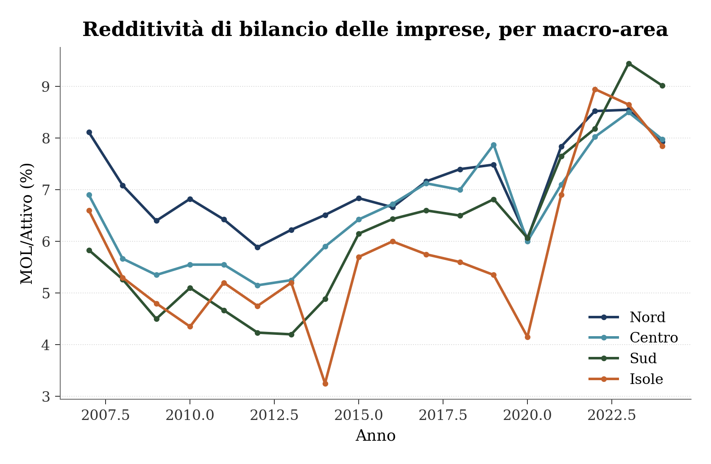

Figura 1: MOL/Attivo per macro-area, 2007-2024
Un confronto tra livello e forma della traiettoria della redditività di bilancio, 2007-2024
Paolo Volterra ![]()
Le venti regioni italiane possono essere trattate, per un momento, come venti soggetti economici osservati nel tempo su uno stesso indicatore di redditività di bilancio: il margine operativo lordo in rapporto all’attivo delle società di capitali, pubblicato ogni anno dalla Banca d’Italia. Confrontando il livello di ciascuna regione con un valore normale di riferimento, e la forma della sua traiettoria negli anni con quella delle altre diciannove, emerge un risultato semplice: la grande maggioranza delle regioni si muove secondo un’unica dinamica comune, con oscillazioni contenute attorno a un centro condiviso. Solo tre regioni si comportano in modo sistematicamente diverso dalle altre, e non lungo la linea di divisione geografica che ci si potrebbe aspettare.
MOL/Attivo, regioni italiane, clustering, serie storiche, Banca d’Italia
Un modo comune di leggere i dati regionali è confrontare i livelli: quale regione è più redditizia, quale meno, in un dato anno. Questo confronto dice poco su come ciascuna regione si comporti nel tempo. Un’ipotesi diversa, esplorata in questo documento, è trattare ogni regione come un soggetto economico a sé, con un proprio valore normale di riferimento — la propria media storica — e osservare quanto e come si allontana da quel valore negli anni, indipendentemente dal fatto che il suo livello assoluto sia alto o basso rispetto alle altre regioni.
Questa distinzione tra livello e forma della traiettoria è al centro di questo documento: due regioni possono avere un livello di redditività molto diverso e tuttavia muoversi nello stesso modo nel tempo — salire e scendere negli stessi anni, con la stessa intensità relativa — oppure avere un livello simile e comportarsi in modo del tutto diverso da un anno all’altro.

Figura 1: MOL/Attivo per macro-area, 2007-2024
Nel 2007 il Nord era l’area con la redditività di bilancio più alta, 8.11%, e il Sud quella più bassa, 5.83%. Diciassette anni dopo, nel 2024, le posizioni sono invertite: il Sud è salito a 9.02%, il valore più alto tra le quattro macro-aree, mentre il Nord è sceso leggermente a 7.92%. Non si tratta di una semplice convergenza verso una media comune: il Sud non si limita a raggiungere il Nord, lo supera.
Questo risultato non è visibile in un confronto limitato agli ultimi cinque o sei anni, la finestra tipicamente mostrata in una singola edizione dei rapporti sulla redditività regionale: il sorpasso è un fenomeno di lungo periodo, riconoscibile solo osservando l’intero arco dal 2007 [1], [2].
Trattando le osservazioni disponibili di tutte le regioni in tutti gli anni come un unico campione, il valore medio è 6.63% e la deviazione standard 1.51 punti percentuali. È un’oscillazione contenuta attorno a un centro comune: le regioni non si comportano come popolazioni radicalmente diverse tra loro, ma come osservazioni ripetute di uno stesso fenomeno con una variabilità moderata.
Il periodo 2007-2024 contiene due momenti in cui questa oscillazione smette di essere moderata e diventa un movimento sistemico, nello stesso senso, per la quasi totalità delle regioni contemporaneamente: il 2008, avvio della crisi finanziaria internazionale, con una variazione media di -1.11 punti, e il 2020, l’anno della pandemia, con una variazione media di -1.3 punti. Il 2021 mostra il rimbalzo più marcato dell’intera serie, 1.68 punti in media. Al di fuori di questi tre anni, le variazioni da un anno all’altro restano piccole.
Per isolare la forma della traiettoria di ciascuna regione dal suo livello assoluto, ogni serie storica viene normalizzata rispetto alla propria media e alla propria deviazione standard nel periodo 2011-2024, l’intervallo in cui tutte e venti le regioni hanno dati disponibili per ogni anno. Un raggruppamento gerarchico applicato alle serie così normalizzate individua i gruppi di regioni che si muovono nello stesso modo nel tempo, a prescindere da quanto siano, in valore assoluto, più o meno redditizie.
| Gruppo | Regioni | |
|---|---|---|
| 0 | 1 | Abruzzo, Basilicata, Calabria, Campania, Emili... |
| 1 | 2 | Lazio, Toscana |
| 2 | 3 | Valle d'Aosta |
Tabella 1
Il risultato è che diciassette regioni su venti condividono un’unica forma di traiettoria: salgono e scendono negli stessi anni, con intensità relative simili, indipendentemente dal fatto che il loro livello di redditività sia alto o basso. Solo due regioni, Lazio e Toscana, formano un secondo gruppo con una dinamica propria. La Valle d’Aosta resta isolata, con un comportamento diverso da tutte le altre diciannove.
Questo risultato non replica una divisione Nord/Sud: il gruppo maggioritario include regioni di tutte e quattro le macro-aree, e le tre eccezioni non condividono una collocazione geografica comune tra loro.
| Livello medio | Deviazione standard | Minimo | Massimo | N regioni | |
|---|---|---|---|---|---|
| cluster | |||||
| 1 | 6.64 | 0.61 | 5.79 | 7.83 | 17 |
| 2 | 7.09 | 0.12 | 7.01 | 7.17 | 2 |
| 3 | 7.73 | — | 7.73 | 7.73 | 1 |
Tabella 2
Il gruppo maggioritario, oltre a condividere la forma della dinamica, è anche omogeneo nel livello: la deviazione standard interna è di appena 0,6 punti percentuali. Il gruppo Lazio-Toscana è ancora più coeso, sia in forma sia in livello: le due regioni hanno un valore medio quasi identico nel periodo. La Valle d’Aosta, oltre a comportarsi in modo diverso dalle altre nel tempo, ha anche il livello medio più alto tra i tre gruppi — una regione piccola, con un numero di società di capitali nel campione molto inferiore a quello delle altre regioni, e per questo più esposta a oscillazioni ampie da un anno all’altro.
L’ipotesi di partenza — trattare le regioni come soggetti economici con un valore normale di riferimento e osservarne l’oscillazione nel tempo — porta a una conclusione più semplice di quanto una lettura per macro-area farebbe pensare. La grande maggioranza del sistema regionale italiano si muove secondo un’unica dinamica comune, con oscillazioni moderate e concentrate in due episodi di crisi riconoscibili. Le eccezioni a questa regola non sono un blocco geografico, ma un piccolo numero di casi specifici, che meriterebbero una spiegazione a livello di singola regione piuttosto che di area del paese.
Trasparenza sull’uso dell’intelligenza artificiale
L’uso di strumenti di intelligenza artificiale generativa è dichiarato esplicitamente in quanto parte del processo di lavoro seguito nella redazione del presente documento. Tali strumenti sono stati impiegati a supporto della lettura, della sintesi, della riorganizzazione argomentativa e della revisione testuale, sempre nell’ambito di un processo pienamente controllato dall’autore.
La responsabilità per le fonti utilizzate, le analisi condotte, le verifiche effettuate, le interpretazioni proposte e le conclusioni formulate resta interamente in capo all’autore.
L’intelligenza artificiale è stata utilizzata come ambiente di supporto cognitivo ed editoriale, non come fonte primaria, autore autonomo o sostituto del giudizio critico.